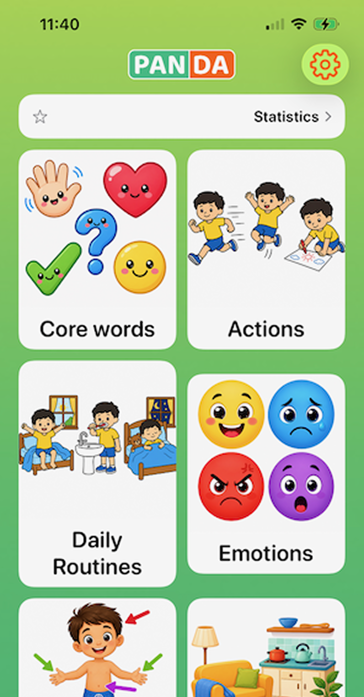

Build vocabulary and communication through pictures, sounds and short activities — in six languages.
Download on App StoreFree to download · Premium from $4.99/month

TalkCards started when we were looking for a simple way to practice language and vocabulary with our son at home. We wanted short activities that felt like play — something we could use between therapy sessions, in the car or before bed. Nothing quite fit what we were looking for, so we built our own app.
Our son has developmental dysphasia. That experience shaped the app, while its picture-based activities can also support young children building vocabulary, including bilingual families.
— Martin & Hannah, Prague
Use TalkCards at your child's own pace — for first words, extra speech support or more than one home language.
Explore useful everyday words through clear pictures, spoken audio and short playful activities.
A practical tool for home practice between professional sessions or while your family is waiting for support.
Practice the same picture cards in any of six languages and switch whenever your family needs.
Short, guided activities that fit into everyday family life.
Every day the app suggests which category to practice — based on what your child hasn't seen recently and what matches their communication level.
Pick a training mode and go through the flashcards together. Repeat words, find images by name, listen to animal sounds, complete phrases. The app speaks every word aloud.
TalkCards keeps a practice log — how often, which categories, how well. Export a PDF and bring it to your next appointment as a starting point for the session.
Each activity builds a different skill. Repeat is always free.
Swipe through flashcards. Hear every word spoken aloud. Tap syllables to practice pronunciation step by step.
The app says a word — your child taps the right image from 4 options. Builds receptive vocabulary.
Identify animals and objects by their real sound — not the word. Works with 60+ audio recordings.
5 ready-to-use sentences for every card — from simple needs to full conversational phrases.
Classic memory matching game. Flip cards, find pairs, hear words spoken on every match.
All cards and audio work without internet. Practice in the car, on a plane, or anywhere.
No account required. No ads. No tracking. Your child's data never leaves your device — everything syncs privately via iCloud.
The app learns what you've practiced and suggests the right category each day — so you never have to decide what to work on.
Add photos of family members and classmates. TalkCards teaches your child the names of the people in their life.
Export a practice summary — frequency, categories, accuracy — and bring it to your therapist so they know exactly what you've been working on at home.
Set your child's current stage — from nonverbal to full sentences. The app adapts which cards and modes are shown.
Built actively. New features ship regularly.